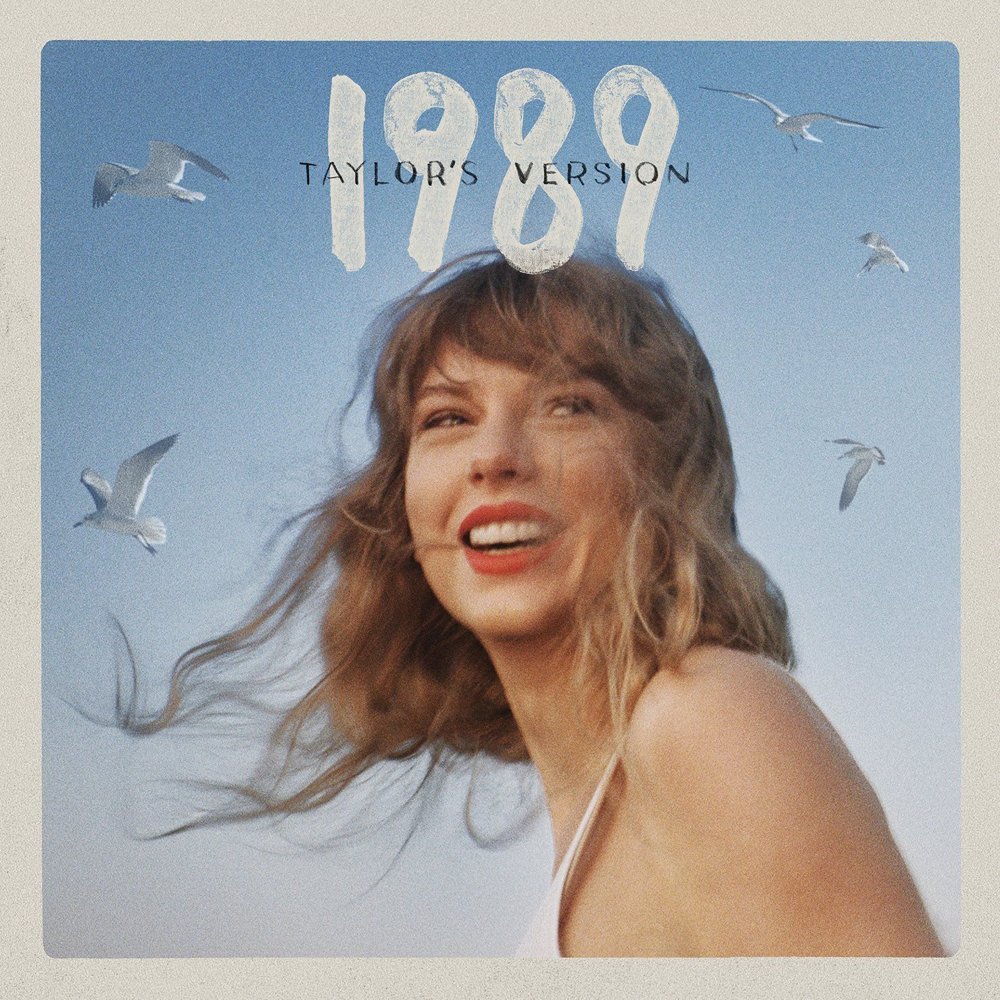
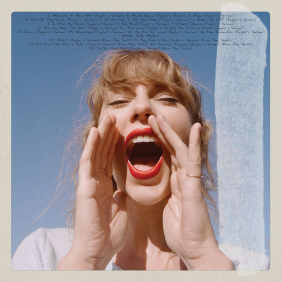
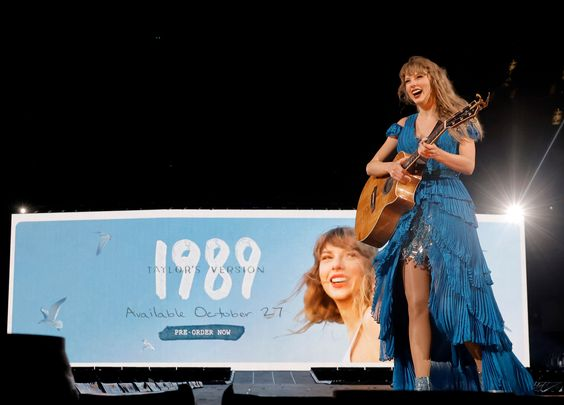

Antecedentes
Taylor Swift lanzó su quinto álbum de estudio, 1989, el 27 de octubre de 2014, por Big Machine Records. Inspirada en el synth-pop de la década de 1980, Swift creó 1989 para recalibrar su estilo musical desde el género country, en el cual se basaron sus primeros cuatro álbumes, a un sonido más pop. El álbum fue un éxito crítico y comercial, recibiendo críticas positivas por parte de los críticos y vendiendo más de 1.287 millones de copias en su primera semana en los Estados Unidos. Tres de sus sencillos, "Shake It Off", "Blank Space" y "Bad Blood", alcanzaron el número uno en el Billboard Hot 100. Swift se convirtió en la primera artista en tener tres álbumes que vendieron un millón de copias cada uno en la primera semana, 1989 fue el primer álbum lanzado en 2014 en superar el millón de copias, y encabezó el Billboard 200 durante 11 semanas no consecutivas. En la 58° edición anual de los Premios Grammy (2016), el álbum ganó el premio al Álbum del Año y al Mejor Álbum Vocal Pop, haciendo de Swift la primera artista femenina en ganar el primer premio en dos ocasiones.
Según su contrato de trece años de exclusividad con Big Machine Records, Swift lanzó seis álbumes de estudio bajo el sello desde 2006, con su álbum debut homónimo, hasta 2017 con su séptimo álbum, y sucesor de 1989, Reputation. A fines de 2018, el contrato expiró; por lo tanto, se retiró de Big Machine y firmó un nuevo acuerdo con Republic Records, una división de Universal Music Group, que le aseguró los derechos de poseer a los másteres de cualquier música nueva que lanzara.
En 2019, el empresario estadounidense Scooter Braun y su empresa Ithaca Holdings adquirieron Big Machine Records, por lo que la propiedad de los másteres de los primeros seis álbumes de estudio de Swift, incluido 1989, se le fue concedido a Braun. En agosto de 2019, Swift denunció la compra de Braun y anunció que volvería a grabar sus primeros seis álbumes de estudio para ser propietaria de sus másteres. Swift comenzó el proceso de regrabación en noviembre de 2020, siendo Fearless (Taylor's Version) el primer álbum regrabado, de seis en total, le seguiría Red (Taylor's Version) y Speak Now (Taylor's Version); los tres logrando un éxito crítico y comercial, debutando en la cima del Billboard 200.
Swift comenzó a dar pistas de 1989 (Taylor's Version) con "Wildest Dreams (Taylor's Version)" en medio de una tendencia viral de TikTok que involucraba la grabación original de la canción del 2014. Un fragmento de "This Love (Taylor's Version)" fue presentado en el tráiler de The Summer I Turned Pretty, serie original de Prime Video.
Los rumores del lanzamiento de la regrabación se hicieron más fuertes cuando los fanáticos notaron varios indicios mientras Swift realizaba sus presentaciones en el SoFi Stadium de Los Ángeles como parte de su sexta gira de conciertos, The Eras Tour, el 8 de agosto de 2023, incluyendo que varios de los trajes de Swift que vestía durante cada acto cambiaron a un color azul, y las pulseras led de los asistentes parpadeaban en azul cinco veces.
Finalmente, el 9 de agosto de 2023, en su último concierto en Los Ángeles, antes de proceder con el acto de las canciones sorpresas, Swift anunciaría 1989 (Taylor's Version) como su próximo álbum regrabado, que se lanzará el 27 de octubre de 2023, exactamente nueve años después del lanzamiento original de 1989.